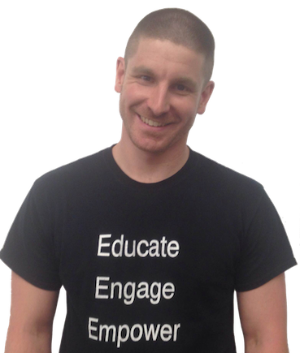
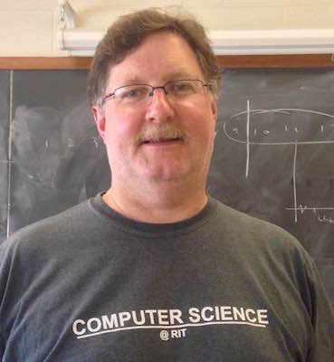
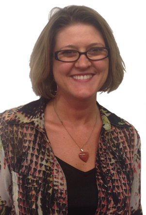

STEM’s Most Illustrious Teachers
Mr. Tuori
“We do. Notes. And. Then. Quiz. And Lab. Quiz Now? Yes.”
Mr. Tuori is by far the most colorful and eccentric teacher at Ithaca High School. Sometimes, he speaks in a monotone. When he presents, he stomps and whacks the board to emphasize points in the lesson. He hates having his picture taken. To make sure his point about not using the wrong K value got across, he ran around the classroom writing “WK” in huge letters in students’ notes to the laughter of everyone.
But beneath his personality, there’s a insightful guy who has interesting things to say. Students often request that he visit their other classes as his points on any subject are original and thought-provoking. Mr. Tuori became a teacher in his late 30s. At age 35, he held degrees in both biology and chemistry. But Mr. Tuori was sick of doing research, and he wanted “some job that was people-oriented and used [his] experience and knowledge of science.” So he became a teacher. This year, he taught Honors and AP Chemistry, was well as Sustainable Agriculture. And everyone had fun and learned a lot. That’s Mr. Tuori.
Mr. Sauve
“What’s not cool about technology?” asked Mr. Sauve when I asked him
Mr. Sauve is a technology teacher at Ithaca High School, where he teaches Design and Drawing for Production, Digital Electronics, Printing Technology, and Graphic Technology. At home, he’s building his own propane-powered turbojet engine that he designed himself. He also advises the Ithaca High School Technology Student Association chapter. A graduate of SUNY Oswego, he loves teaching about technology because it gives students “unique opportunities to use tools and equipment that they may never have been introduced to otherwise.”
Steve
“Steve really made math come alive for me. I had previously scraped by an A- in the subject, but after having Steve I wanted to explore it further. Except my base from past years wasn’t sound enough; I’m sad I didn’t have him then.”
The above quote is a good descriptor of Mr. Weissburg, who goes by Steve with his students, but it leaves out a lot: how he spent some of his past traveling and teaching in Africa, or the crazy stories he tells his classes. Steve is also notable in that he does more than explain the math; he goes into its history—how group theory was almost lost and why there are many notations for calculus.
And he’s conscious of the other aspects of STEM, reminding students that if they want a career in engineering, they really ought to take AP Calculus BC rather than AB after Precalculus.
Mr. Deppe
Mr. Deppe teaches AP Calculus and AP Computer Programming in the Math Department, but he speaks to how none of STEM’s aspects can be effectively divorced from each other: I teach computer science because... I think it is good preparation for all students in today's world, especially those who plan on entering technical fields of study,” he told us. “I think it's fun.”
He detailed how he got into math and programming: “I started programming when I was 13 when my dad's cousin taught me how to write programs in BASIC to do operations with matrices.” Mr. Deppe then got a Masters of Science in Mathematics from Northeastern Illinois University.
But as a teacher, a student noted that “He cares a lot about his students and wants them to succeed. He’ll put in a lot of time out of class to work out answers to your questions or validate your different methods of solving a problem.”
Mrs. Kiechle
“It is important to inspire students to formulate good questions and seek answers to those questions.”
Mrs. Kiechle teaches basic technology classes to special education students. She co-teaches STP Technology Systems, a course that provides an introduction to photoshop, woodwork, and more. Mrs. Kiechle often notes that this course is incredibly important as it’s one her special education students can get a lot of useful life skills out of. Along with Mr. Sauve, she co-advises the Ithaca High School Technology Student Association chapter. Mrs. Kiechle received a BA from Keuka College, an M. Ed. From St. John Fisher College, and a WBL certification from SUNY Buffalo.